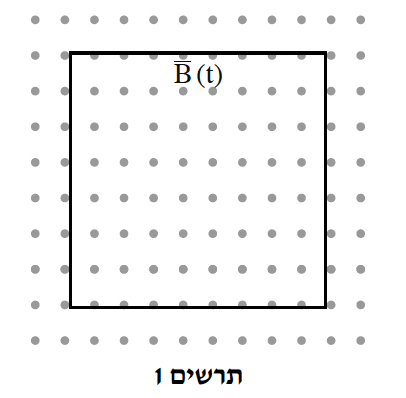
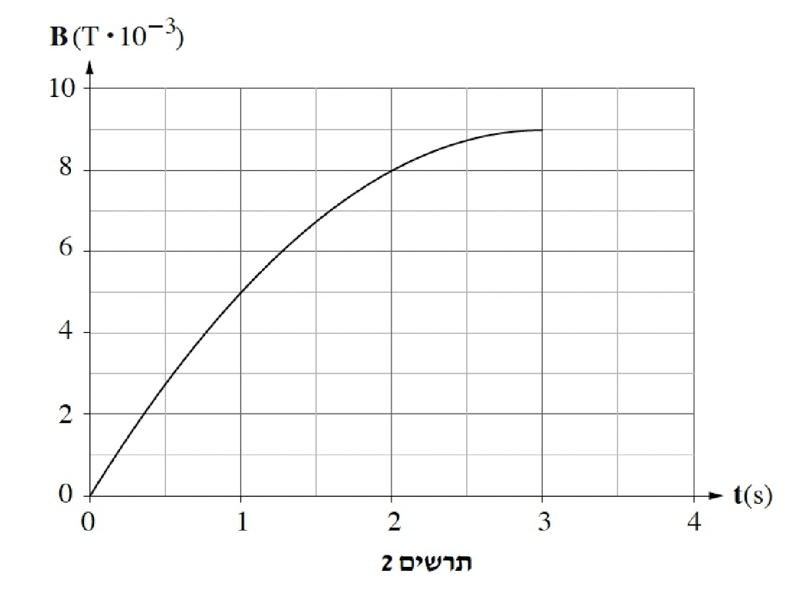
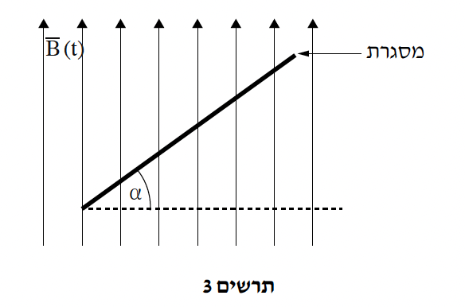

שאלה 6
בתרשים 1 שלפניכם מוצגת מסגרת ריבועית שאורך הצלע שלה 9m. המסגרת עשויה מתיל שהתנגדותו הסגולית ρ = 1.5 · 10-6Ωm, ושטח החתך שלה 5 mm2. מציבים את המסגרת באזור שבו פועל שדה מגנטי אחיד.
בפרק הזמן 3s ≥ t > 0 עוצמת השדה משתנה כפונקציה של הזמן, וכיוונו "החוצה מן הדף" בניצב למישור המסגרת.

בתרשים 2 מוצג גרף המתאר את עוצמת השדה המגנטי, B, כפונקציה של הזמן, t, החל מרגע t = 0 עד רגע t = 3.0s.

חשבו את התנגדות התיל. (6 נקודות)
הסבירו מדוע עבר זרם במסגרת מרגע t = 0 עד רגע t = 3.0s.
תלמיד מדד את עוצמת הזרם במסגרת ברגע t = 0.5s וברגע t = 2.5s.
באיזו משתי המדידות הייתה עוצמת הזרם גדולה יותר? נמקו את תשובתכם.
(10 נקודות)
קבעו את כיוון הזרם במסגרת (עם כיוון השעון או נגדו) במשך שלוש השניות הראשונות. נמקו את תשובתכם. (6 נקודות)
חשבו את עוצמת הזרם בתיל ברגע t = 2.0s. (7 נקודות)
היטו את המסגרת בזווית α ביחס לשדה המגנטי (ראה מבט מן הצד בתרשים 3). הפעילו את השדה המגנטי פעם נוספת מן הרגע t = 0 לפי הגרף המתואר בתרשים 2 וחזרו על המדידות.

קבעו אם ברגע t = 2.0s (כאשר המסגרת נטויה) עוצמת הזרם גדולה מעוצמת הזרם שחישבתם בסעיף ד, קטנה ממנה או שווה לה. (413 נקודות)